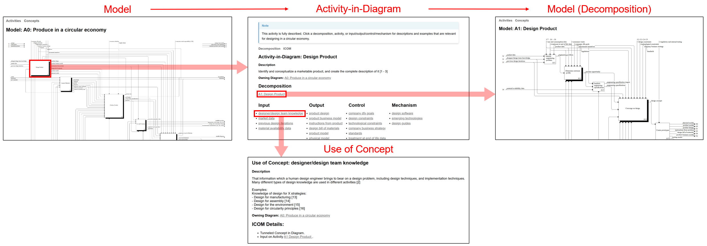

An IDEF0 model is used to represent the functions, activities, and processes of a system (e.g., a circular economy). Such a model is a resource for task analysis, understanding complex systems, etc.
Below are instructions on how to navigate the model, definitions of the modeling structure, and a guide for interpreting the model [61, 62].
Instructions
Explore the model by clicking the link under the Models section of the sidebar or accessing it from the home page. Navigate through the model by clicking any shaded activity box or link on the page.
There are 3 types of pages: Model, Activity-in-Diagram, and Use of Concept.

Model pages:
Model pages consist of diagrams of activities and concepts. The top-level context diagram contains the activity that is the subject of the model (labeled A0). This activity can be decomposed and modeled in a child diagram, and then continue to be decomposed into further child diagrams (A1, A2, ... A11, A12, ... etc.).
On model pages, you can click the shaded boxes to navigate into the activity decompositions.
Links to each individual activity or concept page can be accessed under their respective headers on the page.
Activity-in-Diagram pages:
Activity-in-Diagram pages describe the selected activity and outline the concepts (input, output, control, mechanism) relevant to the selected activity. From these pages, you can access decompositions of the selected activity (child diagrams) or navigate back to the parent diagram of the activity.
Links to each individual concept page can be accessed under their respective headers on the page.
Use of Concept pages:
Use of Concept pages describe the selected concept and provide contextual examples of the concept. They also indicate how the concepts are related to the activities (i.e., inputs, outputs, controls, or mechanisms) and the diagram (i.e., tunneled or not).
Definitions
Activity: A modifying function being modeling within the IDEF∅ model.
Concept: Any of the inputs, outputs, mechanisms, or controls (ICOM for short).
Input: Something that is being modified by the activity.
Output: A result from the activity.
Mechanism: The means and tools employed to complete the activity.
Control: The condition required to ensure the correct output is generated. Controls guide, facilitate, or limit the activity.
Tunneled Arrows: These are arrows that provide information at one level of a decomposition, but are not needed at another parent or child level.
Boundary Arrows: These are arrows that come from the parent activity of the diagram and are labeled with a letter and number prefix.
Guide
Scan the diagram boxes to get an overview of the system
Identify most important inputs, outputs, etc.
Identify if there is a main path linking inputs and outputs
Walk through diagram from left to right and identify if there are secondary paths